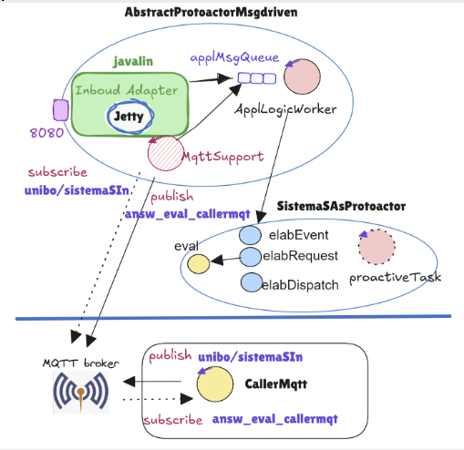

GIT repo: https://github.com/gianluca-varisco/issLab2026
GIT repo: https://github.com/gianluca-varisco/issLab2026
La realizzazione della funzione per calcolare il risultato dell'espressione data in Java è banale.
protected double eval(double x) {
return Math.sin(x) + Math.cos( Math.sqrt(3)*x);
}
MQTT è un protocollo diverso da HTTP e nasce con l'idea che le informazioni emesse (published) su una topic da un componente software sono eventi che qualche altro componente (i subscribers) può percepire ed elaborare.
L'architettura del progetto che voglio realizzare è la seguente:

I Java Executors
sono dei supporti utili per la realizzazione implicita della coppia applMsgQueue e ApplLogicWorker. Infatti, permettono di creare "worker" che rimangono in attesa dei task che gli sono accodati mediante il metodo submit (poiché creati come SingleThread si ha la garanzia che due task non interferiscano tra loro).
Il progetto protoactor26 mostra come si può andare a colmare questo abstraction gap con protoattori che usano i JavaExecutors.
Sulla base di ciò, per andare a fare refactoring dello Sprint1, andiamo a gestire in modo implicito il passaggio dal livello logico al livello realizzativo.
Realizzo come protoattore SistemaSAsProtoactor, che conterrà la logica di business (la funzione eval).
AbstractProtoactorMsgdriven sarà invece SistemaSJavalinBetter rafattorizzato con un riferimento al contesto su cui si scambiano i messaggi, che sfrutterà per andare a inviare le request dove prima faceva eval(x).
La classe CallerMqtt serve per andare a testare se il comportmento è quello atteso.
GIT repo: https://github.com/gianluca-varisco/issLab2026